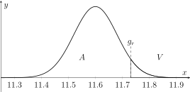

Hoofdstuk 2 Hypothese- of significantietoetsenToetsen van hypothesen
Leerplandoelstellingen (GO! Navigator)
Basisvorming (BV3_06)
-
• BV3_06.17 (MD 06.17) De leerlingen berekenen kansen bij een normaal verdeelde kansvariabele.
Gevorderde wiskunde (WD3_06.08)
-
• WD3_06.08.38 (MD 06.08.36) De leerlingen toetsen hypothesen.
-
– afbakening: nulhypothese, alternatieve hypothese, p-waarde, significantieniveau, steekproevenverdeling
-
I Toetsen van hypothesen
Betrouwbaarheidsintervallen gebruiken we om een populatieparameter te schatten.
Bij toetsen van hypothesen is het doel anders: we willen nagaan of de gegevens uit een steekproef voldoende bewijs leveren voor of tegen een bepaalde bewering over de populatie.
We vertrekken dus van een uitspraak over de populatie en controleren met een steekproef of die uitspraak nog geloofwaardig is.
Een hypothesetoets beantwoordt de vraag:
\[ \text {Is het gevonden steekproefresultaat nog aannemelijk als de nulhypothese waar is?} \]
Omdat we werken met steekproeven zijn onze besluiten nooit helemaal zeker. We proberen wel het risico op een verkeerde uitspraak onder controle te houden.
1 Werkwijze
Voorbeeld
Een fabrikant van metalen cilinders beweert dat de buitendiameter van de cilinders normaal verdeeld is met
\[ \mu = 11.6 \text { cm} \qquad \text {en}\qquad \sigma = 0.4 \text { cm}. \]
De laatste tijd komen er klachten van klanten: sommige cilinders zouden te breed zijn. Volgens hen is de gemiddelde buitendiameter groter dan \(11.6\) cm.
Om dit te onderzoeken neemt de fabrikant een steekproef van \(25\) cilinders. Deze steekproef levert een gemiddelde buitendiameter van
\[ \overline {x}=11.7 \text { cm}. \]
Die vraag is:
\[ \text {moet de fabrikant besluiten dat het productieproces moet worden bijgesteld?} \]
Het formuleren van de hypothese
We formuleren twee hypothesen.
\[ \begin {array}{rcll} H_0 &:& \mu =11.6, & \text {de nulhypothese},\\[0.5ex] H_1 &:& \mu >11.6, & \text {de alternatieve hypothese}. \end {array} \]
De nulhypothese \(H_0\) is de uitspraak waarvan we de juistheid onderzoeken.
De alternatieve hypothese \(H_1\) is het andere standpunt. We kiezen voor \(H_1\) wanneer de nulhypothese op basis van de steekproef niet langer geloofwaardig is.
In dit voorbeeld:
\(\seteqnumber{0}{}{0}\)\begin{align*} H_0&:\opl {\text { het productieproces werkt normaal,}}\\ H_1&:\opl {\text { de gemiddelde buitendiameter is te groot.}} \end{align*}
De toetsingsgrootheid
Na het formuleren van de hypothesen kiezen we een grootheid waarmee de toets wordt uitgevoerd.
In dit voorbeeld kiezen we als stochast:
\[ \overline {X} = \text {de gemiddelde buitendiameter van }25\text { metalen cilinders}. \]
Als \(H_0\) juist is, dan is \(\overline {X}\) normaal verdeeld met
\[ \mu =\opl {11.6} \qquad \text {en}\qquad \sigma _{\overline {X}} =\opl {\frac {0.4}{\sqrt {25}} =0.08.} \]
Dus onder \(H_0\) geldt:
\[ \overline {X}\sim \opl {N(11.6,0.08).} \]
Deze verdeling noemen we de steekproevenverdeling van \(\overline {X}\) onder \(H_0\).
De steekproevenverdeling beschrijft welke waarden van de toetsingsgrootheid normaal te verwachten zijn als \(H_0\) waar is.
Kritieke zone of verwerpingsgebied
Op grond van de steekproevenverdeling bepalen we voor welke waarden van \(\overline {X}\) we \(H_0\) verwerpen.
De verzameling waarden waarvoor \(H_0\) verworpen wordt ten gunste van \(H_1\), noemen we de kritieke zone of het verwerpingsgebied \(V\).
De complementaire verzameling noemen we het aanvaardingsgebied \(A\).
Omdat in dit voorbeeld
\[ H_1:\mu >11.6, \]
verwerpen we \(H_0\) alleen wanneer \(\overline {x}\) voldoende groot is.
\[ \begin {array}{c} A=]-\infty ,g_r[,\\[0.5ex] V=[g_r,+\infty [. \end {array} \]
Hierbij is \(g_r\) de rechtergrenswaarde.

Fouten bij de toetsing
Bij een toets kunnen vier situaties optreden.
\[ \begin {array}{cc|c|c} & & \multicolumn {2}{c}{\text {Beslissing door steekproef}} \\ & & H_0 \text { niet verwerpen} & H_0 \text { verwerpen} \\ \hline & H_0 \text { is waar} & \opl {\text {juiste beslissing }}1-\alpha & \opl {\text {fout van de eerste soort }}\alpha \\[0.5ex] & H_1 \text { is waar} & \opl {\text {fout van de tweede soort }}\beta & \opl {\text {juiste beslissing }}1-\beta \end {array} \]
De kans op een fout van de eerste soort noemen we \(\alpha \).
\[ P(H_0 \text { verwerpen}\mid H_0 \text { waar is})=\alpha . \]
Deze kans \(\alpha \) noemen we het significantieniveau.
De kans op een fout van de tweede soort noemen we \(\beta \).
\[ P(H_0 \text { niet verwerpen}\mid H_1 \text { waar is})=\beta . \]
De kans dat \(H_0\) terecht verworpen wordt wanneer \(H_1\) waar is, is
\[ P(H_0 \text { verwerpen}\mid H_1 \text { waar is})=1-\beta . \]
Deze kans noemen we het onderscheidingsvermogen.
In Engelstalige teksten gebruikt men vaak de termen false positive en false negative.
Stel bijvoorbeeld dat
\[ H_0:\text { de patiÃńnt is niet ziek} \qquad \text {en}\qquad H_1:\text { de patiÃńnt is ziek}. \]
Dan betekent:
\[ \begin {array}{rcl} \text {false positive} &=& \text {de test zegt positief, maar }H_0\text { is waar} \\[0.5ex] &=& \text {fout van de eerste soort } \alpha , \\[2ex] \text {false negative} &=& \text {de test zegt negatief, maar }H_1\text { is waar} \\[0.5ex] &=& \text {fout van de tweede soort } \beta . \end {array} \]
Dus:
\[ \begin {array}{c|c} \text {false positive} & H_0 \text { onterecht verwerpen} \\[0.5ex] \text {false negative} & H_0 \text { onterecht niet verwerpen} \end {array} \]
Bij medische testen is een false negative vaak gevaarlijker: de patiënt is ziek, maar de test merkt het niet op.
Keuze van \(\alpha \)
De waarde van \(\alpha \) wordt meestal vooraf gekozen.
Veelgebruikte waarden zijn:
\[ \alpha =0.10, \qquad \alpha =0.05, \qquad \alpha =0.01. \]
In dit voorbeeld kiest de fabrikant:
\[ \alpha =0.05. \]
Dat betekent dat de kans om \(H_0\) onterecht te verwerpen maximaal \(5\%\) mag zijn.
Oplossing van het voorbeeld
Een fabrikant van metalen cilinders beweert dat de buitendiameter van de cilinders normaal verdeeld is met \(\mu = 11.6 \text { cm} \text { en } \sigma = 0.4 \text { cm}. \)
De laatste tijd komen er klachten van klanten: sommige cilinders zouden te breed zijn. Volgens hen is de gemiddelde buitendiameter groter dan \(11.6\) cm.
Om dit te onderzoeken neemt de fabrikant een steekproef van \(25\) cilinders. Deze steekproef levert een gemiddelde buitendiameter van \(\overline {x}=11.7 \text { cm}. \)
Die vraag is: moet de fabrikant besluiten dat het productieproces moet worden bijgesteld?
We bepalen de grenswaarde \(g_r\) zodat
\[ P(\overline {X}\geq g_r)=\alpha . \]
Met \(\alpha =0.05\) wordt dit:
\(\seteqnumber{0}{}{0}\)\begin{align*} & & P(\overline {X}\geq g_r) &= 0.05 \\[0.5ex] &\Leftrightarrow & 1-P(\overline {X}<g_r) &= 0.05 \\[0.5ex] &\Leftrightarrow & P(\overline {X}<g_r) &= 0.95. \end{align*}
Omdat \(\overline {X}\sim N(11.6,0.08), \)
vinden we \(g_r=11.7316\approx 11.73. \)
Dus: \(\qquad A=]-\infty ,11.73[ \qquad \text {en}\qquad V=[11.73,+\infty [. \)
De gevonden steekproefwaarde is
\[ \overline {x}=11.7. \]
Omdat
\[ 11.7<11.73, \]
ligt de steekproefwaarde in het aanvaardingsgebied.
Besluit:
\[ H_0 \text { wordt niet verworpen op het }5\%\text {-significantieniveau.} \]
De fabrikant heeft op basis van deze steekproef onvoldoende bewijs om te besluiten dat de gemiddelde buitendiameter groter is dan \(11.6\) cm.
2 Eenzijdige of tweezijdige toetsen
De vorm van de alternatieve hypothese bepaalt het soort toets.
\[ \begin {array}{c|c|c} \text {geval} & \text {hypothesen} & \text {soort toets} \\ \hline 1 & \begin {array}{l} H_0:\mu =\mu _0\\ H_1:\mu >\mu _0 \end {array} & \text {rechts eenzijdige toets} \\[3ex] 2 & \begin {array}{l} H_0:\mu =\mu _0\\ H_1:\mu <\mu _0 \end {array} & \text {links eenzijdige toets} \\[3ex] 3 & \begin {array}{l} H_0:\mu =\mu _0\\ H_1:\mu \neq \mu _0 \end {array} & \text {tweezijdige toets} \end {array} \]
Bij een rechts eenzijdige toets ligt het verwerpingsgebied rechts.
Bij een links eenzijdige toets ligt het verwerpingsgebied links.
Bij een tweezijdige toets ligt het verwerpingsgebied verdeeld over beide staarten.
Voorbeeld tweezijdige toets
Een fabrikant van metalen cilinders beweert dat de buitendiameter van de cilinders normaal verdeeld is met \(\mu = 11.6 \text { cm} \text { en } \sigma = 0.4 \text { cm}. \)
Een fabrikant test nu preventief of de gemiddelde buitendiameter nog juist is ingesteld. Hij wil dus afwijkingen in beide richtingen opsporen.
Om dit te onderzoeken neemt de fabrikant een steekproef van \(25\) cilinders. Deze steekproef levert een gemiddelde buitendiameter van \(\overline {x}=11.7 \text { cm}. \)
\[ \begin {array}{rcl} H_0&:&\mu =11.6,\\ H_1&:&\mu \neq 11.6. \end {array} \]
Opnieuw geldt bij \(n=25\):
\[ \overline {X}\sim N(11.6,0.08). \]
Bij \(\alpha =0.05 \) wordt in elke staart een kans van \(\frac {\alpha }{2}=0.025 \) gelegd.
De grenswaarden \(g_l\) en \(g_r\) voldoen aan:
\[ P(\overline {X}<g_l)=0.025 \qquad \text {en}\qquad P(\overline {X}>g_r)=0.025. \]
Dus:
\[ P(\overline {X}<g_l)=0.025 \qquad \text {en}\qquad P(\overline {X}<g_r)=0.975. \]
Hieruit volgt:
\[ g_l\approx 11.44 \qquad \text {en}\qquad g_r\approx 11.76. \]
Het aanvaardingsgebied en het verwerpingsgebied zijn dus:
\[ A=]11.44,11.76[ \]
\[ V=]-\infty ,11.44]\cup [11.76,+\infty [. \]
3 Toetsingsprocedure via grenswaarden
Toets voor het gemiddelde \(\mu \) van een normale verdeling
\[ \begin {array}{c|c|c|c} & \text {links eenzijdige toets} & \text {tweezijdige toets} & \text {rechts eenzijdige toets} \\ \hline \text {hypothesen} & \begin {array}{l} H_0:\mu =\mu _0\\ H_1:\mu <\mu _0 \end {array} & \begin {array}{l} H_0:\mu =\mu _0\\ H_1:\mu \neq \mu _0 \end {array} & \begin {array}{l} H_0:\mu =\mu _0\\ H_1:\mu >\mu _0 \end {array} \\[4ex] \hline \text {grenswaarden} & P(\overline {X}<g)\leq \alpha & \begin {array}{c} P(\overline {X}<g_l)\leq \frac {1}{2}\alpha \\ P(\overline {X}>g_r)\leq \frac {1}{2}\alpha \end {array} & P(\overline {X}>g)\leq \alpha \\[4ex] \hline H_0\text { verwerpen als} & \overline {X}\leq g & \overline {X}<g_l\text { of }\overline {X}>g_r & \overline {X}\geq g \end {array} \]
4 Oefeningen
Handboek VBTL - Statistiek: p 217 nr 1, 2, 3, 4, 5, 6 (Telkens m.b.v. grenswaarde)
II P-waarde
1 Het idee
Bij de methode met grenswaarden bepalen we eerst een kritieke zone en bekijken daarna of de steekproefwaarde daarin ligt.
Bij de methode met de P-waarde draaien we de vraag om.
We vragen:
\[ \text {hoe groot is de kans om onder }H_0\text { een minstens even extreem resultaat te vinden?} \]
Een kleine P-waarde betekent dat het steekproefresultaat weinig waarschijnlijk is als \(H_0\) waar is.
De P-waarde is de kans, berekend onder \(H_0\), op een resultaat dat minstens zo extreem is als het gevonden steekproefresultaat.
2 Voorbeeld
We hernemen het voorbeeld van de klachten:
Een fabrikant van metalen cilinders beweert dat de buitendiameter van de cilinders normaal verdeeld is met \(\mu = 11.6 \text { cm} \text { en } \sigma = 0.4 \text { cm}. \)
Om dit te onderzoeken neemt de fabrikant een steekproef van \(25\) cilinders. Deze steekproef levert een gemiddelde buitendiameter van \(\overline {x}=11.7 \text { cm}. \)
De hypotheses:
\[ \begin {array}{rcl} H_0&:&\mu =11.6,\\ H_1&:&\mu >11.6. \end {array} \]
De toetsingsgrootheid:
\[ \overline {X} = \text {de gemiddelde buitendiameter van }25\text { cilinders}. \]
Onder \(H_0\) geldt:
\[ \overline {X}\sim N(11.6,0.08). \]
Het gevonden steekproefgemiddelde is:
\[ \overline {x}=11.7. \]
Omdat dit een rechts eenzijdige toets is, bereken we:
\[ P=P(\overline {X}\geq \overline {x}). \]
\begin{align*} & & P & =P(\overline {X}\geq \overline {x}) \\[0.5ex] & \Leftrightarrow & P & =P(\overline {X}\geq 11.7) \\[0.5ex] & \Leftrightarrow & P & =1-P(\overline {X}<11.7) \\[0.5ex] & \Leftrightarrow & P & \approx 0.1056. \end{align*}
Dus:
\[ P\text {-waarde}=\opl {0.1056.} \]
We vergelijken deze waarde met
\[ \alpha =0.05. \]
Omdat
\[ 0.1056>0.05, \]
verwerpen we \(H_0\) niet.
Besluit:
\[ \text {De steekproef levert onvoldoende bewijs dat }\mu >11.6. \]
3 Toetsingsprocedure via de P-waarde
-
1. Formuleer een nulhypothese \(H_0\) en een alternatieve hypothese \(H_1\).
-
2. Bepaal de toetsingsgrootheid.
-
3. Bepaal de steekproefomvang \(n\) en kies een waarde voor \(\alpha \).
-
4. Bereken de P-waarde van de steekproef.
-
5. Vergelijk de P-waarde met \(\alpha \).
De beslissingsregel is:
\[ \boxed { P\leq \alpha \quad \Longleftrightarrow \quad H_0\text { verwerpen.} } \]
Als
\[ P>\alpha , \]
dan verwerpen we \(H_0\) niet.
Toets voor het gemiddelde
\[ \begin {array}{c|c|c|c} & \text {links eenzijdig} & \text {tweezijdige toets} & \text {rechts eenzijdige} \\ \hline \text {hypothesen} & \begin {array}{l} H_0:\mu =\mu _0\\ H_1:\mu <\mu _0 \end {array} & \begin {array}{l} H_0:\mu =\mu _0\\ H_1:\mu \neq \mu _0 \end {array} & \begin {array}{l} H_0:\mu =\mu _0\\ H_1:\mu >\mu _0 \end {array} \\[4ex] \hline \text {P-waarde} & P=P(\overline {X}\leq \overline {x}) & \begin {array}{l} \overline {x}<\mu _0,\\ \qquad \Rightarrow P=2\cdot P(\overline {X}\leq \overline {x})\\ \overline {x}>\mu _0,\\ \qquad \Rightarrow P=2\cdot P(\overline {X}\geq \overline {x}) \end {array} & P=P(\overline {X}\geq \overline {x}) \\[5ex] \hline H_0\text { verwerpen} & P\leq \alpha & P\leq \alpha & P\leq \alpha \end {array} \]
4 Oefeningen
Handboek VBTL - Statistiek: p 217 nr 1, 2, 3, 4, 5, 6 (Telkens m.b.v. P-waarde)